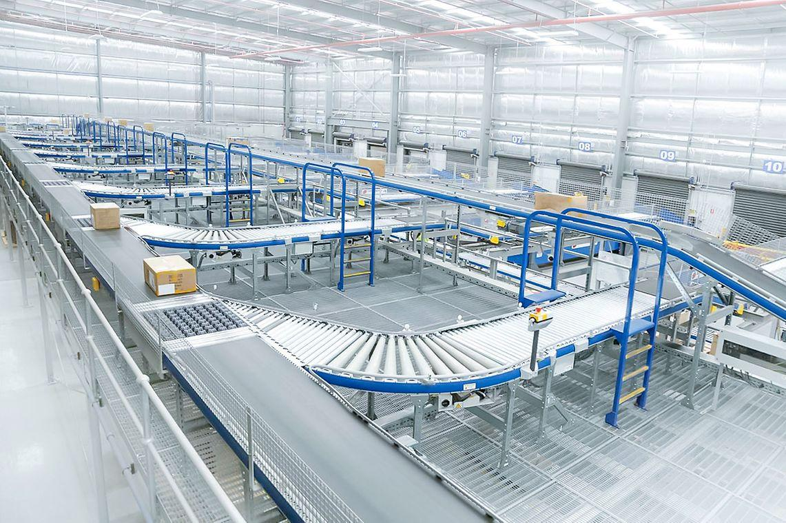

Conveyor Systems Built Around Your Product Flow
Move cartons, totes, pallets, and individual products more efficiently with conveyor solutions selected for your throughput, handling requirements, facility layout, and automation goals.
Keep Your Warehouse Moving
Efficient product flow is the backbone of every high-performing warehouse.
Twin Pick Racks evaluates your operation to identify the transport equipment that best supports your products, workflow, operational goals, and future expansion. We simplify the selection process by connecting you with trusted manufacturers and proven material handling technologies designed to improve productivity.
What We Evaluate
- Product dimensions, weights, packaging, and orientation
- Required throughput, accumulation, and release logic
- Travel distance, elevation changes, curves, merges, and diverts
- Picking, packing, shipping, production, and replenishment workflows
- Controls, sensors, guarding, operator access, and safety requirements
- Integration with WMS, WCS, robotics, sortation, and future capacity
A Symphony of Motion
Each conveyor type solves a different movement, accumulation, or routing challenge. Twin Pick Racks helps compare load characteristics, speed, control, durability, maintenance, and integration requirements before a system is finalized.

Roller Conveyors
Reliable and versatile systems designed to transport cartons, totes, pallets, and other products through your facility.
Best fit: cartons, totes, and general product transport
Belt Conveyors
Ideal for moving products of varying sizes and shapes while providing smooth, continuous transportation between workstations.
Best fit: mixed product sizes and smooth continuous movement
Powered Roller Conveyors
Increase throughput with motor-driven rollers that efficiently move products through picking, packing, sorting, and shipping operations.
Best fit: controlled flow, accumulation, and high-throughput zones
Gravity Conveyors
A cost-effective solution that uses gravity to move products without external power, making them ideal for loading docks and temporary workstations.
Best fit: docks, workstations, and economical manual-flow areas
Pallet Conveyors
Built to safely transport heavy pallet loads between storage systems, production lines, and automated warehouse equipment.
Best fit: heavy pallet loads and automated pallet handling
Sortation Systems
Automatically direct products to designated destinations, improving order accuracy while reducing labor requirements.
Best fit: automated routing, order fulfillment, and shipping lanes
Transfers & Conveyor Accessories
Integrate merges, diverts, lifts, turntables, and transfers to create seamless material flow between multiple conveyor lines.
Best fit: directional changes, merges, diverts, and line connections
Custom Conveyor Solutions
Every operation is unique. Twin Pick Racks helps design conveyor systems that integrate with pallet rack, mezzanines, automation, robotics, warehouse control systems (WCS), and material handling equipment to create a complete warehouse solution.
Best fit: integrated, automated, or unusually constrained facilitiesFrom Product Flow to a Buildable Conveyor Plan
We begin with your products, throughput, routing, labor, safety, and integration requirements so the recommendation is driven by the operation—not a predetermined conveyor type.
Assess
Document product characteristics, throughput, workflows, travel paths, labor constraints, controls, and growth targets.
Compare
Evaluate conveyor technologies and manufacturers against speed, load, control, maintenance, budget, and lifecycle needs.
Integrate
Coordinate the selected system with sortation, controls, WMS/WCS, robotics, workstations, guarding, and installation.
Ready to Design a Better Conveyor System?
Tell us what your facility needs to move, accumulate, sort, elevate, or connect. Twin Pick Racks will help define the right conveyor strategy and integration path.